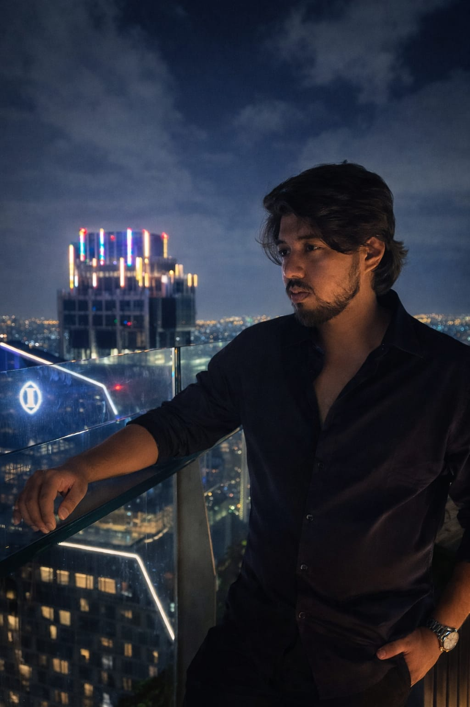
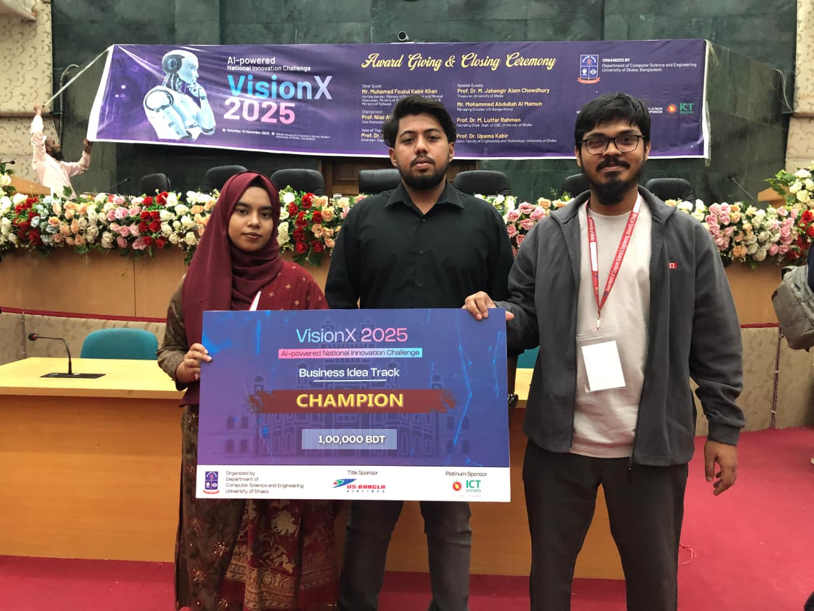
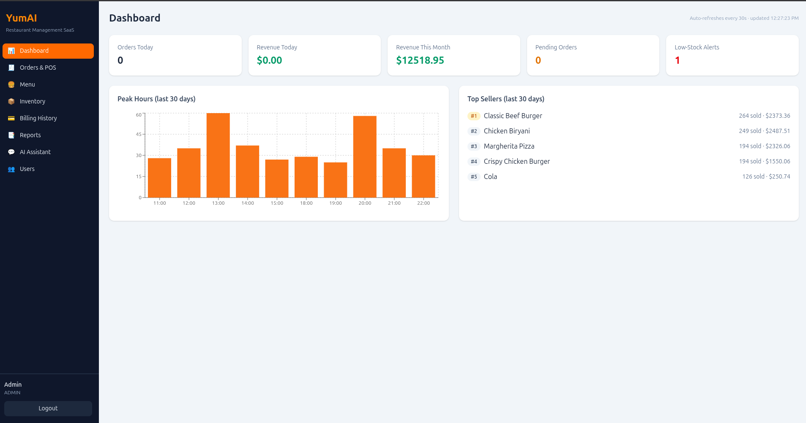
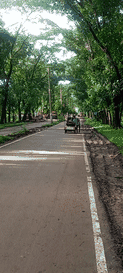

Applied AI & Machine Learning
LLM workflows · retrieval · evaluation · APIs
SOFTWARE ENGINEER · AI/ML ENGINEER
I build intelligent products and reliable software systems.
RESUME01 / PROFILE
A little about how I approach engineering and the work I do.

ENGINEERING WITH CONTEXT
I’m a Software Engineer and AI/ML Engineer based in Sylhet, Bangladesh. I work across applied AI, full-stack product development, and forward deployed engineering—understanding the problem, building the system, and helping it work reliably in production.
My experience spans client-facing AI features, production software, and computer vision for robotics. I’m currently a Forward Deployed Engineer at nogori.ai and studying Computer Science and Engineering at SUST.
LLM workflows · retrieval · evaluation · APIs
Product interfaces · backend services · data workflows
Client integrations · workflow design · reliability
Perception · mapping · ROS 2 · embedded systems
02 / SELECTED WORK
Real products and engineering systems, shaped by practical constraints.

01 / 03StitchAI FASHION PLATFORM
Personal style intelligence with body measurement, virtual try-on, and tailored recommendations—helping people shop for apparel with greater confidence.
Top 25 · bdapps Innovation SummitRecognized at the early idea stage.
Top 50 · SOLVIO AI HackathonSelected among the top 50 projects.
Champion · VisionX Business Idea TrackNational AI-powered innovation challenge.
Merit Award · ICT & Innovation AwardsBusiness Service category; selected as one of 40 finalists from 355 submissions through expert jury evaluation.
Bangladesh representative · APICTA AwardsSelected for international representation.

FULL-STACK RESTAURANT SAAS
One operational workspace for point of sale, orders, billing, and inventory, with end-to-end order flows and LLM-based demand forecasting.

03 / 03AUTONOMOUS SYSTEMS · DEMOOBSTACLE DETECTION · ROS 2 · EMBEDDED GPUROBOTICS · COMPUTER VISION
A real-time stereo-camera perception pipeline for obstacle detection and environment mapping, optimized for compact embedded GPUs.
03 / THE TOOLKIT
Technologies I use to take systems from first build to production.
$ stack --list
Core tools, selected for the problem at hand.
Focus a key to inspect a technology.
04 / MY JOURNEY
A selection of roles, collaborations, and ongoing study.
nogori.ai · CURRENT
Shipped two AI features for client products, built 5+ API endpoints and integrations, and resolved 10+ reliability issues across AI workflows and backend services.
BlackWaves Studio
Led an eight-person team delivering 20+ production projects, including work for two multinational companies. Improved client website ROI by 25% and contributed to Shahjalal Foods’ technical infrastructure.
Outlier
Evaluated 280+ AI-generated solutions, wrote 160+ adversarial prompts, and created verified reference implementations and evaluation rubrics.
Shahjalal University of Science and Technology
Building a foundation in software engineering, intelligent systems, algorithms, and the practical design of production software.
05 / GET IN TOUCH
Have an AI workflow, product idea, or engineering challenge? Let’s talk.
Start a conversation ↗BASED IN
SYLHET, BANGLADESH
LOCAL TIME UTC +6
BANGLADESH STANDARD TIME